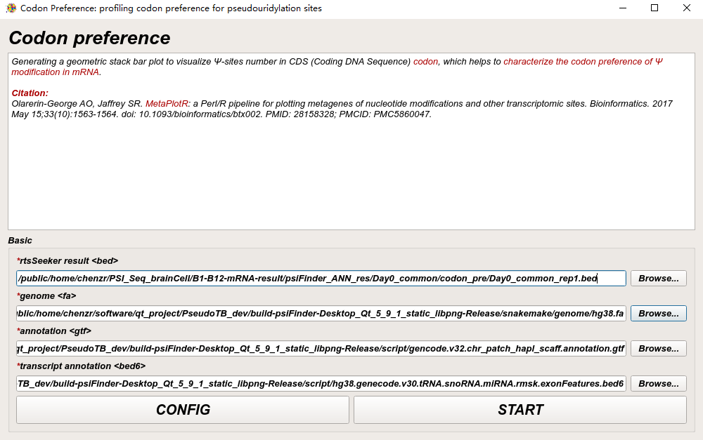

Ψ-sites Codon Preference
We utilize MetaPlotR to generate metagene plot for Ψ-sites distribution profile.
Input
Users should choose to upload files (i.e. rtsSeeker result) in bed format, genome fasta file, genome annotation file, and transcript annotation file (the same file for bedAnnotator --anno input).
Profile Ψ-sites codon preference
Once click START, psiFindeer will run codon_preference.sh.
codon_preference.sh
#! /bin/bash
usage() {
echo 'Usage: ./'$0 ' -i bedfile -g genome -a gtf [option] '
echo ' -A <bedfile> : bed6 file for annotating'
exit -1
}
bedfile=''
genome=''
gtf=''
annofile=''
while getopts 'i:g:a:A:' OPT; do
case $OPT in
i) bedfile="$OPTARG";;
g) genome="$OPTARG";;
a) gtf="$OPTARG";;
A) annofile="$OPTARG";;
h) usage;;
?) usage;;
esac
done
echo "generating ${bedfile%.bed}_anno.bed"
cut -f 1-6 ${bedfile} >${bedfile}6
bedAnnotator --anno ${annofile} --bed ${bedfile}6 -o ${bedfile%.bed}_anno.bed 2>${bedfile%.bed}_anno.log # /public/home/chenlf/pseudoU/script/final_version/hg38.genecode.v30.tRNA.snoRNA.miRNA.rmsk.exonFeatures.bed6
#get data for metagene plot
echo -e "get metagene data"
if [ ! -f ${gtf%.gtf}_annot_sorted.bed ]
then
if [ ! -f "${gtf%.gtf}.genePred" ]
then
echo "generate genePredfile"
gtfToGenePred -genePredExt -geneNameAsName2 $gtf ${gtf%.gtf}.genePred
else
echo "genePredfile exist"
fi
echo "generate metagene annotation bed"
perl $(dirname "$0")/make_annot_bed.pl --genomeDir ${genome%.fa}_metagene --genePred ${gtf%.gtf}.genePred > ${gtf%.gtf}_annot.bed
bedtools sort -i ${gtf%.gtf}_annot.bed > ${gtf%.gtf}_annot_sorted.bed
rm ${gtf%.gtf}_annot.bed
echo "generate region sizes data"
perl $(dirname "$0")/size_of_cds_utrs.pl --annot ${gtf%.gtf}_annot_sorted.bed >${gtf%.gtf}_region_sizes.txt
fi
echo -e "metagene annotaion"
cut -f 1-6 ${bedfile%.bed}_anno.bed >${bedfile}6
perl $(dirname "$0")/annotate_bed_file.pl --bed ${bedfile}6 --bed2 ${gtf%.gtf}_annot_sorted.bed >${bedfile%.bed}.sorted_annot.bed
perl $(dirname "$0")/rel_and_abs_dist_calc.pl --bed ${bedfile%.bed}.sorted_annot.bed --regions ${gtf%.gtf}_region_sizes.txt >${bedfile%.bed}_metagene.txt
echo -e "get data for codon information"
cat ${bedfile%.bed}.sorted_annot.bed |awk 'BEGIN{FS="|";OFS="\t"} {if ($3=="cds") {print $1,$3,$4%3}}' >${bedfile%.bed}_metagene_cds.txt
cat ${bedfile%.bed}_metagene_cds.txt | awk 'FS=OFS="\t" {if ($6=="+") {if ($12==0) {print $1,$2-2,$3,""$1"|"$3"|"$10"|"$12"",$12,$6} else {print $1,$2+1-$12,$3+3-$12,""$1"|"$3"|"$10"|"$12"",$12,$6}} else {if ($12==0) {print $1,$2,$3+2,""$1"|"$3"|"$10"|"$12"",$12,$6} else {print $1,$2-3+$12,$3-1+$12,""$1"|"$3"|"$10"|"$12"",$12,$6}}}' >${bedfile%.bed}_metagene_cds.bed6
bedtools getfasta -fi $genome -bed ${bedfile%.bed}_metagene_cds.bed6 -name+ -tab -s >${bedfile%.bed}_metagene_cds.fa
sed -i -e 's/|/\t/g' -e 's/T/U/g' -e 's/t/u/g' -e 's/::/\t/' -e 's/ENSU/ENST/' -e 's/0\tchr/3\tchr/' ${bedfile%.bed}_metagene_cds.fa # -e 's/a/A/g' -e 's/t/T/g' -e 's/g/G/g' -e 's/c/C/g'
echo -e "generate codon_preference plot from ${bedfile%.bed}_metagene_cds.fa"
Rscript $(dirname "$0")/codon_preference.r -f ${bedfile%.bed}_metagene.txt -m ${bedfile%.bed}_metagene_cds.fa -o ${bedfile%.bed}
mupdf-x11 ${bedfile%.bed}_codon_preference.pdf &> /dev/null
echo "codon_preference plot end"
codon_preference.r
# reference https://github.com/olarerin/metaPlotR
suppressMessages(library("ggplot2"))
suppressMessages(library("optparse"))
suppressMessages(library("dplyr"))
suppressMessages(library("RColorBrewer"))
suppressMessages(library("stringr"))
option_list = list(
make_option(c("-f", "--metagenefile"), type="character", default=NULL,
help="metagenefile [file]", metavar="character"),
make_option(c("-m", "--metagenefile_cds"), type="character", default=NULL,
help="metagenefile_cds [file]", metavar="character"),
make_option(c("-o", "--outfile_prefix"), type="character", default=NULL,
help="output file name [default= %default]", metavar="character")
);
opt_parser = OptionParser(option_list=option_list);
opt = parse_args(opt_parser);
if (is.null(opt$metagenefile)|| is.null(opt$outfile_prefix) ){
print_help(opt_parser);
stop("Please provide -f metagene file -m metagene_cds file and -o outfile_prefix option", call.=FALSE);
}
metagenefile = opt$metagenefile
metagenefile_cds = opt$metagenefile_cds
outFile_prefix = opt$outfile_prefix
print(metagenefile)
print(metagenefile_cds)
print(outFile_prefix)
pseudoU.dist <- read.delim (metagenefile, header = T)
# Determine longest length transcript for each gene
trx_len <- pseudoU.dist$utr5_size + pseudoU.dist$cds_size + pseudoU.dist$utr3_size
temp <- data.frame(paste(pseudoU.dist$chr,pseudoU.dist$coord,sep="_"), pseudoU.dist$refseqID, trx_len)
colnames(temp) <- c("coord", "gid", "trx_len")
temp.df <- temp[order(temp$coord, temp$gid, -temp$trx_len),]
temp.df <- temp[!duplicated(temp$coord),]
mycol=brewer.pal(7, "Set1")
codon_info<-read.table(metagenefile_cds, header=FALSE)
codon_final<-codon_info[paste(codon_info$V1,codon_info$V2,codon_info$V3,sep="_") %in% paste(temp.df$coord,temp.df$gid,sep="_"),c(4,6)]
codon_final_tmp<-codon_info[paste(codon_info$V1,codon_info$V2,codon_info$V3,sep="_") %in% paste(temp.df$coord,temp.df$gid,sep="_"),]
write.table(codon_final_tmp,paste(outFile_prefix, '_codon_preference_bed.txt', sep=""),sep="\t",row.names=FALSE, col.names=TRUE,quote=F)
codon_final$V6<-toupper(codon_final$V6)
codon_final<-plyr::count(codon_final, names(codon_final))
colnames(codon_final)<-c("position","codon","number")
codon_final$position=as.character(codon_final$position)
codon_final$position<-str_replace_all(codon_final$position, c("1" = "1st", "2" = "2nd","3"="3rd"))
codon_final<-arrange(codon_final,desc(number))
codon_final<-codon_final[codon_final$number>1,]
codon_plot<-ggplot(codon_final,aes(x=factor(codon,levels=unique(codon_final$codon)),y=number,fill=position))+geom_bar(alpha=0.8,width=0.5,stat="identity",position="stack")+ theme_bw()+theme(
legend.position="top",
plot.margin = unit(c(7,4,7,4), "cm"),
axis.text.x = element_text(angle=90, hjust=0, vjust=0.3),
panel.border = element_blank(),
panel.grid.major = element_blank(),
panel.grid.minor = element_blank(),
axis.line = element_line(colour = "black"),
axis.title.x=element_blank(),
axis.ticks.x=element_blank(),
panel.grid = element_blank(),
panel.background=element_blank(),
)+ylab("Numbers")+
scale_fill_manual(values = mycol)+
scale_y_continuous(expand = c(0,0))
pdf(paste(outFile_prefix, '_codon_preference.pdf', sep=""),width= 8,height=8)
codon_plot
dev.off()
write.table(codon_final,paste(outFile_prefix, '_codon_preference.txt', sep=""),sep="\t",row.names=FALSE, col.names=TRUE,quote=F)
Ψ-sites file
-i bedfile accept file in bed format and pass it to MetaPlotR pipline.
Output
Result with _codon_preference.txt suffix is the final CodonPre result.
$ cd /the/directory/of/out_file_dir
# see all files, don't run.
$ tree -L 1
.
├── Day0_common_rep1_anno.bed
├── Day0_common_rep1_anno.log
├── Day0_common_rep1.bed
├── Day0_common_rep1.bed6
├── Day0_common_rep1_codon_preference_bed.txt
├── Day0_common_rep1_codon_preference.pdf
├── Day0_common_rep1_codon_preference.txt
├── Day0_common_rep1_metagene_cds.bed6
├── Day0_common_rep1_metagene_cds.fa
├── Day0_common_rep1_metagene_cds.txt
├── Day0_common_rep1_metagene.txt
└── Day0_common_rep1.sorted_annot.bed
0 directories, 12 files
Note
All user input will be recorded in a plain text file with suffix _codon_preference_config.txt in psiFinder/config and help users to easily reload the previous config (by simply clicking CONFIG button).